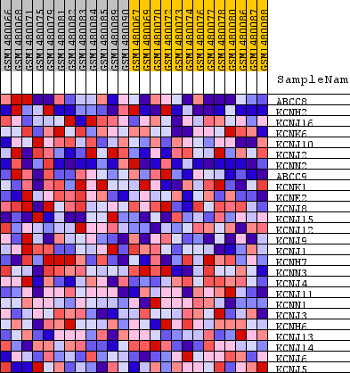
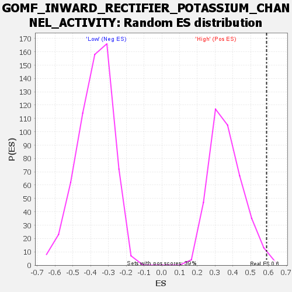

Profile of the Running ES Score & Positions of GeneSet Members on the Rank Ordered List
| Dataset | WG6v3.CPT1A.cls#High_versus_Low.CPT1A.cls#High_versus_Low_repos |
| Phenotype | CPT1A.cls#High_versus_Low_repos |
| Upregulated in class | High |
| GeneSet | GOMF_INWARD_RECTIFIER_POTASSIUM_CHANNEL_ACTIVITY |
| Enrichment Score (ES) | 0.5890552 |
| Normalized Enrichment Score (NES) | 1.6227877 |
| Nominal p-value | 0.0051282053 |
| FDR q-value | 1.0 |
| FWER p-Value | 1.0 |
| SYMBOL | TITLE | RANK IN GENE LIST | RANK METRIC SCORE | RUNNING ES | CORE ENRICHMENT | |
|---|---|---|---|---|---|---|
| 1 | ABCC8 | ABCC8 | 115 | 0.164 | 0.2125 | Yes |
| 2 | KCNH2 | KCNH2 | 731 | 0.084 | 0.2930 | Yes |
| 3 | KCNJ16 | KCNJ16 | 1366 | 0.062 | 0.3435 | Yes |
| 4 | KCNK6 | KCNK6 | 1533 | 0.058 | 0.4126 | Yes |
| 5 | KCNJ10 | KCNJ10 | 1862 | 0.052 | 0.4644 | Yes |
| 6 | KCNJ2 | KCNJ2 | 1943 | 0.050 | 0.5274 | Yes |
| 7 | KCNN2 | KCNN2 | 2702 | 0.040 | 0.5410 | Yes |
| 8 | ABCC9 | ABCC9 | 3379 | 0.032 | 0.5490 | Yes |
| 9 | KCNK1 | KCNK1 | 3949 | 0.027 | 0.5559 | Yes |
| 10 | KCNE2 | KCNE2 | 3999 | 0.027 | 0.5891 | Yes |
| 11 | KCNJ8 | KCNJ8 | 5532 | 0.016 | 0.5316 | No |
| 12 | KCNJ15 | KCNJ15 | 6984 | 0.010 | 0.4697 | No |
| 13 | KCNJ12 | KCNJ12 | 7140 | 0.009 | 0.4738 | No |
| 14 | KCNJ9 | KCNJ9 | 7536 | 0.008 | 0.4636 | No |
| 15 | KCNJ1 | KCNJ1 | 8130 | 0.006 | 0.4406 | No |
| 16 | KCNH7 | KCNH7 | 9594 | 0.001 | 0.3668 | No |
| 17 | KCNN3 | KCNN3 | 9797 | 0.001 | 0.3571 | No |
| 18 | KCNJ4 | KCNJ4 | 10876 | -0.003 | 0.3051 | No |
| 19 | KCNJ11 | KCNJ11 | 11254 | -0.004 | 0.2909 | No |
| 20 | KCNN1 | KCNN1 | 11536 | -0.005 | 0.2828 | No |
| 21 | KCNJ3 | KCNJ3 | 12610 | -0.008 | 0.2387 | No |
| 22 | KCNH6 | KCNH6 | 13365 | -0.012 | 0.2155 | No |
| 23 | KCNJ13 | KCNJ13 | 13468 | -0.012 | 0.2267 | No |
| 24 | KCNJ14 | KCNJ14 | 14078 | -0.016 | 0.2161 | No |
| 25 | KCNJ6 | KCNJ6 | 14230 | -0.017 | 0.2305 | No |
| 26 | KCNJ5 | KCNJ5 | 15623 | -0.028 | 0.1959 | No |

